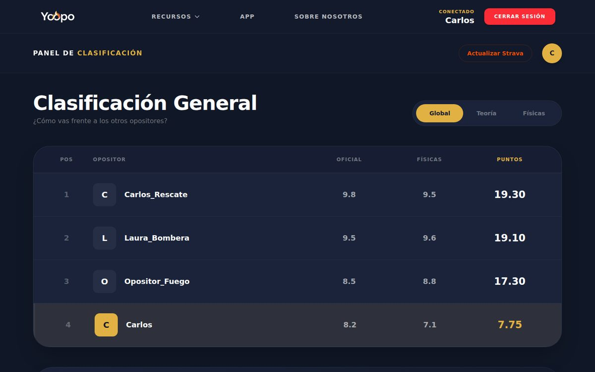

App web para opositores a bombero: tests oficiales cronometrados, Pomodoro, registro de marcas físicas y un ranking teórico y físico frente a otros opositores.

Ranking: tu puesto frente a otros opositores, en teoría y en pruebas físicas.
React
TypeScript
Vite
Tailwind
Firebase
Ahora mismo
en curso
Este portfolioHTML, CSS y JavaScript, sin frameworks
Web
ANTTOWeb para una marca de diseño de ropa
Proyecto
Buscando mi primer puestoDesarrollador junior, abierto a entrevistas
Soy desarrollador full stack junior. Me gusta entender cómo funcionan las cosas por dentro, así que suelo leer la documentación antes que el tutorial. Disfruto especialmente del backend y del diseño de bases de datos.
Aprendo rápido, pregunto cuando me atasco y me tomo en serio escribir código que otra persona pueda leer y mantener.
UbicaciónMadrid
ModalidadPresencial, híbrido o remoto
DisponibilidadInmediata
IdiomasEspañol nativo, inglés B1
Proyectos
TFG · app para opositores
Yoopo
App para opositores a bombero que reúne en un solo sitio la preparación teórica, la física y la motivación del día a día.
Apuntes oficiales con cronómetro que registra el tiempo real de estudio.
Tests oficiales con cronómetro que registra el tiempo real de estudio, más un modo examen que simula la prueba.
Temporizador Pomodoro integrado para organizar las sesiones de estudio.
Registro de marcas físicas y seguimiento del entrenamiento al estilo de Strava.
Ranking de resultados teóricos y físicos para que cada opositor conozca su puesto frente al resto.
Red social para opositores que fomenta la motivación y la disciplina.
React
TypeScript
Vite
Tailwind
Firebase
Experiencia
2026 – Actualidad
Prácticas · Picasso Business Center
Gestión de entornos web y despliegue de servicios con Apache, Nginx y Docker, asegurando la estabilidad y escalabilidad de las aplicaciones en un entorno de producción real.
Docker
Nginx
Apache
Despliegue
2025
Prácticas · Grupo Oro
Primera experiencia profesional como desarrollador. Desarrollo de soluciones web con HTML5, CSS3 y JavaScript, aplicando conocimientos técnicos en un entorno real para optimizar procesos y mejorar la interfaz de usuario.
HTML5
CSS3
JavaScript
2022 – Actualidad
Carrefour
Resolución de incidencias en tiempo real, identificación de errores en la interfaz de usuario y reporte de bugs para mejorar las herramientas de gestión interna.
Resolución de incidencias
UX
Reporte de bugs
Formación
2024 – 2026
Grado Superior Desarrollo de Aplicaciones Web
Davante. Proyecto final: Yoopo, una app para opositores a bombero con tests oficiales cronometrados, registro de marcas físicas, ranking entre opositores y red social.
Contacto
Si buscáis un junior con ganas de aprender y aportar, escribidme. Respondo en menos de 24 horas.